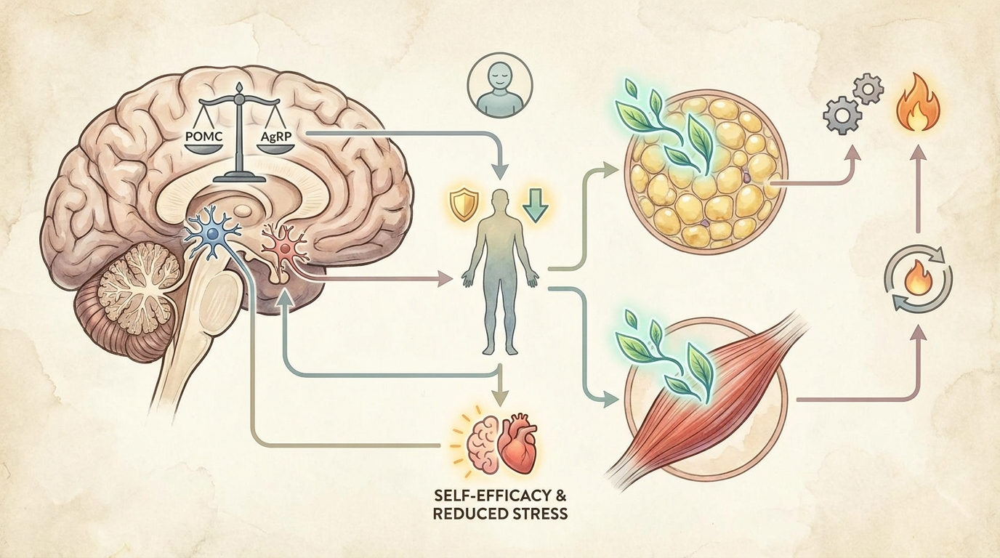

为什么代表院长主导的1对1诊疗中形成的治疗联盟能降低体重反弹风险：探索自我效能与代谢调节的机制
基于社会认知理论，一段持续稳定的治疗关系可能增强患者的自我效能，并有助于稳定下丘脑POMC/AgRP食欲调节回路。当此方法与旨在维持基础代谢率的韩药处方相结合时，相较于分散化的多人诊疗模式，在确保可持续的代谢稳态方面具有更强的机制学合理性。
1. 药物依赖型减重的局限性与行为习惯矫正疗法对预防体重反弹的重要性
在减重过程中，若仅依赖单一的药物疗法，则存在固有的“溜溜球现象”风险，即在停药后食欲抑制信号骤然消失，从而导致体重迅速反弹。这与一种生理学局限性有关：药物干预仅能在下丘脑弓状核的食欲调节神经元中引发暂时性的信号变化，却无法从根本上重置潜在的行为习惯或代谢稳态本身。根据社会认知理论，饮食习惯的长期维持在很大程度上并不取决于单纯的意志力，而是取决于个体的自我效能（Self-Efficacy）水平，即患者相信自己能够独立控制并维持自身行为改变的一种心理信念。
在一种分散化、多人接触的诊疗结构中——即患者每次就诊时接触的都是不同的工作人员或非连续性的咨询人员——由于难以为患者提供一致的行为反馈，可能会削弱其行为责任感。反之，一种由代表院长亲自从始至终管理同一患者的护理连续性（Continuity of Care）模式，则能够建立一种被称为“治疗联盟”（Therapeutic Alliance）的信任关系。从比较生理学的角度来看，这种关系的稳定性可能降低患者的应激水平，从而有助于减轻由皮质醇等应激激素引发的下丘脑-垂体-肾上腺（HPA）轴的过度激活。因此，当药物处方与行为习惯矫正疗法围绕着与主治医师之间的持续关系并行进行时，降低体重反弹风险的心理生理学机制可能会得到显著强化。
2. 摒弃不必要的套餐化包装的高性价比结构与代表院长1对1KakaoTalk密集护理体系

与其将临床资源分散于多层次的行政程序或附加服务套餐中，不如将资源直接集中于代表院长纯粹的1对1指导上，这种结构不仅能够提升成本效益比，同时还能强化可持续代谢管理的行为学与生理学机制。在这一密集护理体系中，通过与代表院长进行实时KakaoTalk咨询等持续沟通渠道，患者能够在饮食失误或平台期等危机情况下获得即时的行为矫正反馈，从而为自我效能提供心理支持基础。
自我效能的持续强化以及治疗相关应激的降低，可能对下丘脑POMC（阿黑皮素原）与AgRP（刺鼠相关蛋白）神经元之间的平衡调节产生积极影响，而这一调节被认为有助于维持稳定的饱腹感信号传导。与此同时，韩医减重韩药通过支持基础代谢率（BMR）的提升与代谢稳态，有助于确保行为学干预与生物化学干预相辅相成地发挥作用。下表比较了单纯药物依赖型减重与以代表院长为中心的1对1密集行为习惯矫正护理模式之间的机制学差异。
| 比较项目 | 单纯药物依赖型减重 | 1对1密集行为习惯矫正护理 |
|---|---|---|
| 护理连续性 | 多人分散接触，非连续性咨询 | 由代表院长独自持续管理 |
| 自我效能的形成 | 有限，对外部药物的依赖性加深 | 基于治疗联盟的自我效能强化 |
| 停药后风险 | 饱腹感信号骤降，体重反弹风险增加 | 通过习惯化的行为矫正呈现风险缓解趋势 |
| 代谢方法 | 主要集中于药物性食欲抑制 | 通过韩药并行支持基础代谢率（BMR） |
3. 关于代表院长主导的持续1对1诊疗中形成的治疗联盟如何影响自我效能与下丘脑代谢调节的机制之学术与临床论文分析
Bodyall韩医院在积累的1对1生活习惯矫正诊疗经验中所观察到的克服药物依赖及维持可持续代谢趋势，与Wong等 (2021)的研究[1]在学术上是一致的，该研究阐明了草药与生活方式矫正相结合时，相较于对照组，在体重及体重指数（BMI）降低方面产生具有统计学意义的辅助效应之生化机制。这项针对39项随机对照试验进行分析的系统文献综述提示，相较于草药单一疗法，生活方式干预的结合对于代谢改善至关重要，从而支持了这一机制学有效性：即唯有在并行实施持续的行为习惯矫正指导，而非单纯依赖药物处方的情况下，基础代谢率改善效果才能得以最大化[1]。
此外，一项涉及3161名肥胖患者的大规模单中心回顾性观察研究表明，以单一机构为中心的持续管理模式，与代表院长主导的1对1诊疗体系下形成治疗联盟的临床背景相吻合[2]。值得注意的是，在最佳反应组中，通过平均8.71个月的持续随访管理实现了以脂肪量为核心的减重效果，这一发现提示，相较于一次性处方或分散化的多人诊疗模式，持续的医患关系可能有助于维持基础代谢率并提升对行为习惯矫正疗法的依从性。即便在7个月的随访时间点仍观察到具有统计学意义的体重维持效果，这一结果被视为一种佐证：以自我效能为基础的持续护理模式，可能在学术上与预防体重反弹的机制存在关联[2]。
4. BodyallFit 减重方案（代谢矫正方案）中1对1定制化生活习惯矫正指南
BodyallFit 减重方案（代谢矫正方案）是以代表院长独自持续管理为原则，而非分散化的多人诊疗结构；这代表了一种专注于形成能够支撑患者自我效能的治疗联盟的行为习惯矫正方法。该模式通过实时且密集的KakaoTalk咨询，在危机情况下提供即时反馈，并致力于通过韩医减重韩药同时支持基础代谢率的维持及代谢稳态，从而相较于单纯的药物依赖或分散化诊疗方式，强化可持续代谢管理的机制学合理性。
通过持续稳定的治疗关系所形成的治疗联盟，可能降低患者的应激水平并增强自我效能，从而对下丘脑POMC/AgRP神经元的平衡产生积极影响。从比较生理学的角度来看，当此方法与通过韩药实现的基础代谢率维持相结合时，相较于分散化的多提供者接触方式，在确保代谢稳态方面具有更强的机制学合理性。
因此，BodyallFit 减重方案（代谢矫正方案）致力于将资源集中于代表院长的直接1对1指导，排除不必要的服务套餐化，从而在提升成本效益比的同时，同步强化行为学与生理学层面的代谢管理机制。这提供了一种综合性视角，提示当代谢矫正韩药处方与持续性医患关系相结合时，相较于药物单一疗法或非连续性的多人诊疗方式，这在学术上可能对应着更为稳定的体重维持趋势。
参考文献
- Wong, et al. (2021), '中草药用于体重管理：随机对照试验的系统评价与荟萃分析', Journal of Obesity. DOI: 10.1155/2021/3250723
- Bang, et al. (2025), '针对肥胖人群的草药疗法与生活方式调整：单中心回顾性观察研究', Pharmaceuticals. DOI: 10.3390/ph18091396